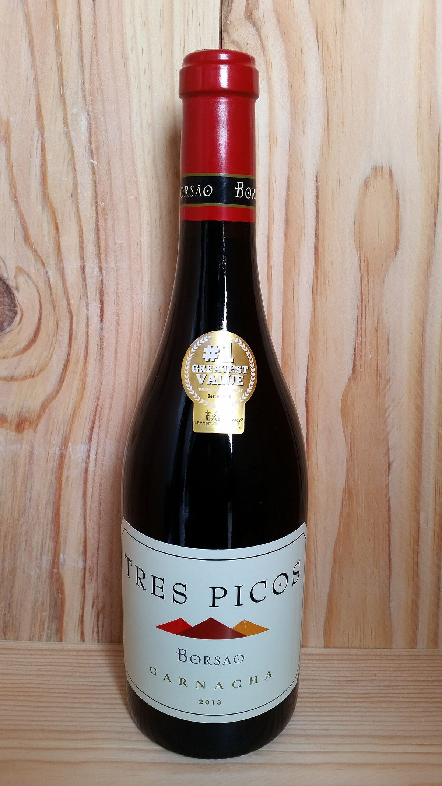

ROSSO
Campo de Borja è una denominazione di origine della provincia di Saragozza, situata tra la valle dell'Ebro e le pendici del Moncayo. Si è specializzata nella Garnacha, con numerose vecchie vigne, e si presenta come «l'Impero della Garnacha».

La viticoltura nei dintorni di Borja ha una lunga storia. Nel Medioevo il monastero cistercense di Veruela, fondato nel XII secolo ai piedi del Moncayo, ebbe un ruolo di rilievo nello sviluppo agricolo della zona, compresa la coltivazione della vite. Per secoli la zona produsse soprattutto vini di Garnacha di alta gradazione, venduti sfusi e spesso usati per dare corpo e colore a vini di altre regioni. Le cooperative ebbero un ruolo centrale nel Novecento. Con la nascita della denominazione di origine e la modernizzazione delle cantine, Campo de Borja iniziò a imbottigliare i propri vini e a valorizzare i suoi vecchi vigneti di Garnacha.
La denominazione comprende diversi comuni dell'ovest della provincia di Saragozza, attorno a Borja, Ainzón, Fuendejalón, Magallón o Ambel, in una fascia che sale dalla valle dell'Ebro verso il massiccio del Moncayo. Questa differenza di altitudine crea condizioni varie all'interno di una stessa zona. Il clima è continentale e secco, con inverni freddi ed estati calde, piogge scarse e forti contrasti termici. Il cierzo, vento freddo e secco da nord-ovest, soffia con frequenza, contribuisce alla sanità dell'uva e limita il rischio di malattie.
I suoli sono in genere poveri e sassosi, di natura calcarea, con zone di argille rossastre e ciottoli. Nelle parti più alte, vicino al Moncayo, i suoli sono più sciolti e leggeri. Queste condizioni limitano le rese, soprattutto nelle vecchie vigne ad alberello.
La Garnacha è il vitigno dominante e il segno distintivo della zona. Dà rossi di frutto rosso maturo, corpo e calore, che nelle vecchie vigne e nelle zone più alte guadagnano in concentrazione e freschezza. Si coltivano anche Tempranillo, Mazuelo (Carignano), Cabernet Sauvignon, Merlot e Syrah, oltre a bianchi come il Macabeo e il Moscato. Si producono rossi giovani e affinati in botte, rosati di Garnacha, alcuni bianchi e vini dolci di Moscato.
Una parte importante dei vigneti di Garnacha è costituita da viti piantate diversi decenni fa, allevate ad alberello e senza irrigazione. Queste vigne producono poca uva, ma di grande concentrazione, e sono diventate una risorsa preziosa per vini che esprimono il carattere del vitigno in questo territorio. La denominazione ne ha promosso la conservazione come parte del proprio patrimonio viticolo.


